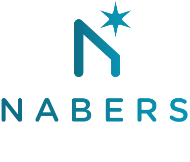

Waste audit and assessments will ensure that detailed composition analysis is provided
to identify waste sources, quantity, types and potential opportunities. it will also
provide minimization measure as well as best practices.
Waste Management Plan (WMP)
WMP part of the requirement for development approval and planning application in all
local council of Australia. it provides an in-depth description of potential sources of
and management options. A WMP may also be prepared for organisation who want to reduce
their enviromental footprint while increasing their enviromental ratings.
Waste Education and Traing
We provide customized training and workshops on waste minimization, waste management, enviromental impact,
responsible consumption, resources extraction, sustainability and circular economy. Our Educational program
is structured for diffrent level or cadre in an organization ranging from management to contractors and
tenants.
Waste Minimization Design
Waste minimization design is crucial for effectively minimizing waste before it is generated. We can provide
architects, building owners and contractors with innovative design measure to help minimize consructuion waste.
Waste Reporting and Data validation
Waste reporting helps to keep tracks of waste management measures or plan developed on the basis of
organization requirment and in line with the key performance indidcators. Wheather monthly, quarterly,
half-yearly
or annual waste reports, we will help you prepare report that are compatible with the Green Star
and NABERS guidelines.
NABERS Waste Rating

We have NABERS Accredited Assesscor who can access your building for waste management, energy
and water efficiency and indoor air qualuty. To lean more on how we can help you to achieve a
NABERS
Waste rating, please contact us
Green Start Rating
Contact us to learn how we can help you achieve cpmplice with Green star Rating
status.